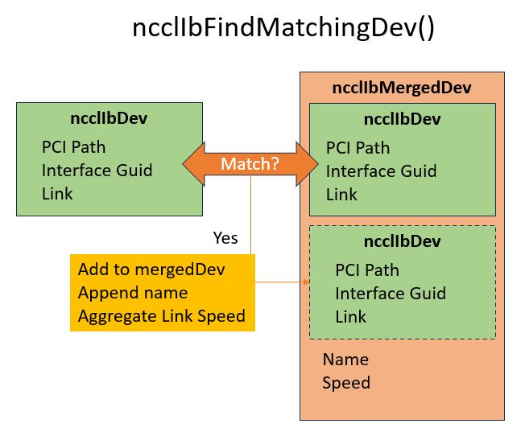
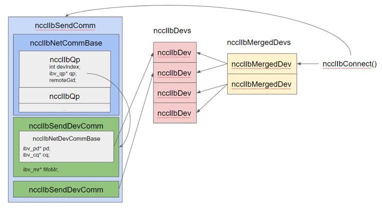

NCCL-21 : InfiniBand Port Fusion
Design
$CONTENTS
Problem Statement
Dual port CX-6 RoCE NICs, which are physically a single 200 Gbs device, present themselves to the PCI bus, OS, and Infinband Verbs library as two distinct 100 Gbps devices. NCCL struggles to cleanly drive the full bandwidth of two NICs per-GPU with its current graph search.
Solution
Port Fusion, or Port Merging. We have implemented the ability for the IB network plugin to "merge" two matching NICs into a single logical NIC, which aggregates the bandwidth of both. This causes NCCL to properly use all NICs and scale channels better as well.
Proposed Design
The key differences in design from before are as follows:
- NCCL must match and merge dual port devices together.
- Each port of a dual-port NIC exposes and must be driven from a distinct ibv_context.
- Both devices can be involved in a single send/recv operation.
Matching devices

NCCL must match and merge dual port devices together. We have a simple O(N^2) search of all enumerated IB devices on a system, and which match the specified criteria to be considered one merged device.
// Compare ncclIbDev[dev] to all stored mergedIbDevs
int ncclIbFindMatchingDev(int dev) {
for (int i = 0; i < ncclNMergedIbDevs; i++) {
int compareDev = ncclIbMergedDevs[i].devs[0];
if (strcmp(ncclIbDevs[dev].pciPath, ncclIbDevs[compareDev].pciPath) == 0 &&
(ncclIbDevs[dev].guid == ncclIbDevs[compareDev].guid) &&
(ncclIbDevs[dev].link == ncclIbDevs[compareDev].link)) {
return i;
}
}
// No match found
return ncclNMergedIbDevs;
}
Decomposing ibv_context's from netComm

Each port of a dual-port NIC exposes and must be driven from a distinct ibv_context. This is a big difference from the prior design, which equated one ibv_context and all its associated resources with a single netComm. Now, there is a wrapper around physical device structs which live under one merged netComm object. QPs must know which device they reside on, as well as which remote device they are connected to.
ncclIbQp
Small wrapper around an ibv_qp*, with a deviceIndex (pointing to a local devComm index on this netComm) and remoteGidInfo, as each QP could be connected to a different remote GID.
struct ncclIbQp {
struct ibv_qp* qp;
int devIndex;
int remDevIndex;
};
ncclIbNetCommBase
Base information needed for both ncclIbSendComm and ncclIbRecvComm objects, namely a list of QPs, tcp socket, ready flag, and number of devices / qps. isSend is a new field necessary - before any function which took either a sendComm or recvComm could rely on the fact that the commBase had all the information it would need. Now these functions need to index into each devComm, thus the need to conditionally cast to the correct type of netComm.
struct alignas(32) ncclIbNetCommBase {
int ndevs;
bool isSend;
struct ncclIbRequest reqs[MAX_REQUESTS];
struct ncclIbQp qps[NCCL_IB_MAX_QPS];
int nqps;
int qpIndex;
int devIndex;
struct ncclSocket sock;
int ready;
// Track necessary remDevInfo here
int nRemDevs;
struct ncclIbDevInfo remDevs[NCCL_IB_MAX_DEVS_PER_NIC];
};
ncclIbNetDevCommBase
Wrapper around needed info for operating a devComm. Contains per-dev things like PD, CQ, gidInfo, and also ibDevN which lets us look up properties from the global ncclIbDev
struct ncclIbNetCommDevBase {
int ibDevN;
struct ibv_pd* pd;
struct ibv_cq* cq;
uint64_t pad[1];
struct ncclIbGidInfo gidInfo;
};
Handling multi-device sends and recvs
Memory Regions must be managed more carefully. A given rkey / lkey pair can only be used from the ibv_context that was used to register it. This can pose a problem when we want both NICs to send or receive from the same address range. What we've done is, instead of passing around ibv_mr* back to NCCL, we return an memhandleWrapper struct which holds all ibv_mr* related to one address. Furthermore, IB RC qps (which NCCL uses) can only reference an rkey registered by the same device. What we needed to do was expand the CTS fifo entry to include two rkeys, and have the responding (send-side) QP select the correct rkey given which remove device it is connected to.

// Wrapper to track an MR per-device, if needed
struct ncclIbMrHandle {
ibv_mr* mrs[NCCL_IB_MAX_DEVS_PER_NIC];
};
Beyond this, a minimum of ndevs (2 in the merged device case) QPs are used for every send and receive. Each IB flush operation is also spread across both devices. Completion queues are polled in an alternating fashion across devices.
Interface Architecture
System KPIs & Metrics
1. Drive all 16 ports to the maximally achievable bandwidth
2. Ensure stability and performance for non-merged cases
Data Architecture
N/A
Security Design
N/A
Debugging & Troubleshooting
There is an assumption, for now, that both sides of a connection must be merged devices. An attempt was made to be resilient and flexible to this scenario, but it's not guarunteed to work. Therefore, if one port were to go down on one node, it's not guarunteed the system will be stable. This can be worked around by either selecting exactly the same set of HCAs on both nodes (NCCL_IB_HCA) or turning off port-merging (NCCL_IB_MERGE_NICS=0)
Logging and Instrumentation
N/A
Operational Considerations
None.
Signoff list